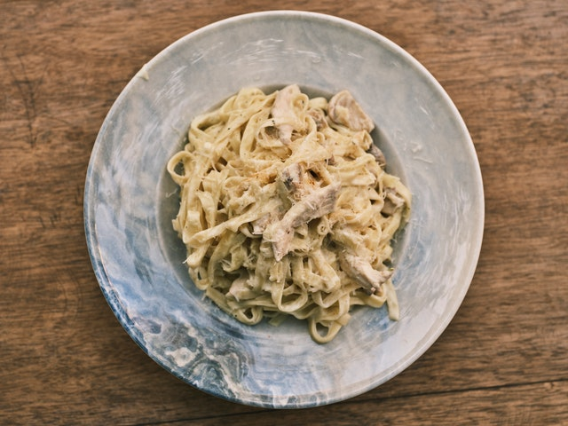

Fettuccine Alfredo

Best Chicken Fettuccine Alfredo
This is a classic Italian-American dish that needs to be in every single kitchen. My Fettuccine Alfredo Recipe and Skinny Fettuccine Alfredo Recipe (with 75% less fat) are some of the most popular recipes on my Modern Honey. So I decided to add some protein by adding some sliced chicken breast!
It all starts with a homemade alfredo sauce made with butter, garlic, heavy cream, and parmesan cheese tossed with fettuccine pasta. It is topped with seasoned sauteed chicken breast.
Ingredients
- 1 lb. Fettuccine Alfredo (I prefer to use fresh, refrigerated fettuccine pasta)
- 6 Tablespoons Salted Butter
- 1 Garlic Clove (minced)
- 1 ½ cups Heavy Cream
- 1 ¼ cups Parmesan Cheese (high-quality, grated)
- ¼ teaspoon Salt
- ¼ teaspoon Pepper
- Fresh Parsley (optional)
- 3 Chicken Breasts
- 3 Tablespoons Butter
- ½ teaspoon Garlic Powder
- 1 teaspoon Parsley
- ½-1 teaspoon Salt
Steps
- While sauce is thickening, heat another skillet over medium-high heat. Add 3 Tablespoons of butter to the pan and let melt. Place the chicken in the pan and sprinkle with garlic powder, parsley, and salt. Cook for 4-6 minutes per side, depending on the thickness of the chicken breast. Cook until no longer pink. Let rest for 5 minutes before slicing.
- While sauce is thickening, heat another skillet over medium-high heat. Add 3 Tablespoons of butter to the pan and let melt. Place the chicken in the pan and sprinkle with garlic powder, parsley, and salt. Cook for 4-6 minutes per side, depending on the thickness of the chicken breast. Cook until no longer pink. Let rest for 5 minutes before slicing.
- Let heavy cream reduce and cook for 5 to 8 minutes. Add half of the parmesan cheese to the mixture and whisk well until smooth. Keep over heat and whisk well until cheese is melted.
- While sauce is thickening, heat another skillet over medium-high heat. Add 3 Tablespoons of butter to the pan and let melt. Place the chicken in the pan and sprinkle with garlic powder, parsley, and salt. Cook for 4-6 minutes per side, depending on the thickness of the chicken breast. Cook until no longer pink. Let rest for 5 minutes before slicing.
- Toss alfredo sauce with fettuccine pasta and add half of the parmesan cheese. Once it is tossed, garnish with the remaining parmesan cheese. Add a little pasta water if it needs to be thinned out.
- Top with sliced chicken breast and garnish with fresh parsley, if so desired.